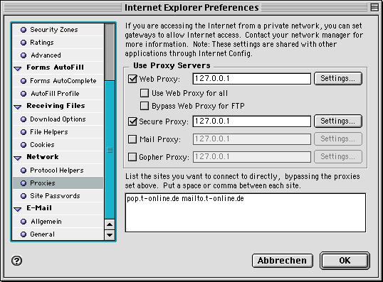
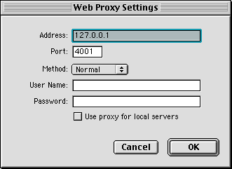
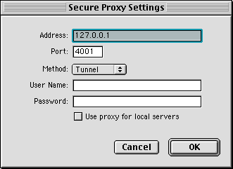

Proxy Configuration (Mac)
Configurations for Apple Macintosh
We recommend using Internet Explorer. Configuration of other web browsers
is slightly different.
- Launch Internet Explorer
- Select "Edit:Preferences..." from Menu bar.
- Select "Network->Proxies" in the appearing window.
- Check the following entries:
x Web Proxy
x Secure Proxy
- For "Web Proxy" click "Settings..." and type in:
Adress: 127.0.0.1
Port: 4001
Method: Normal
Check "Use proxy for local servers" (optional)
- For "Secure Proxy" click "Settings..." and enter:
Adress: 127.0.0.1
Port: 4001
Method: Tunnel
Check "Use proxy for local servers" (optional)
Screenshots


